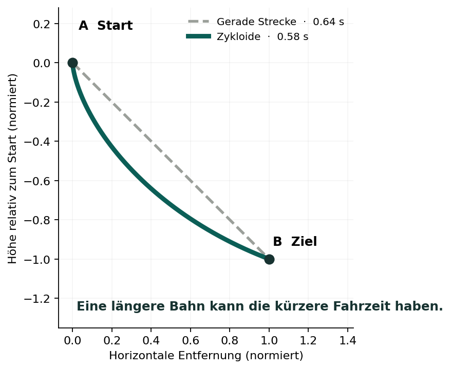
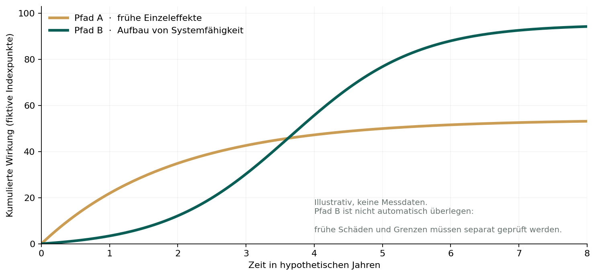
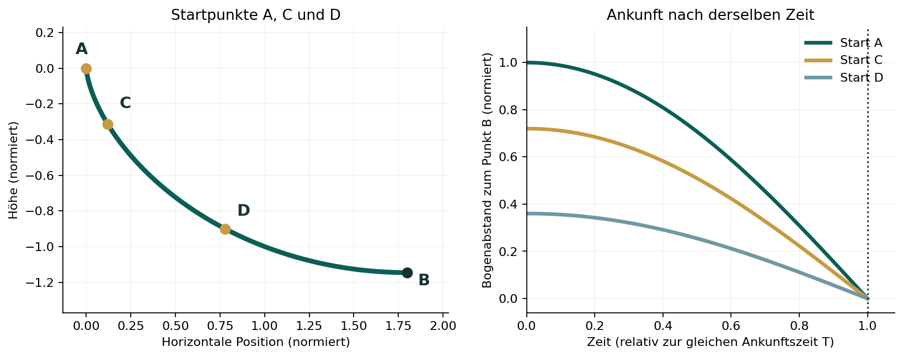

In diesem Beitrag
- Die erste Überraschung: Der kürzeste Weg gewinnt nicht
- Vielleicht optimieren wir in der Politik die falschen Dinge
- Ein Beispiel: die Energiewende
- Wirkung hat eine Geschwindigkeit. Und sie kann sich beschleunigen.
- Und jetzt kommt der eigentlich verblüffende Teil: A, B, C und D
- Was wäre, wenn unsere Systeme besser mit unterschiedlichen Startpunkten umgehen könnten?
- Was wir daraus machen können
- Die wichtigste Frage ist also nicht: Wie kommen wir mit möglichst wenig Aufwand von A nach B?
- Quellen und weiterführende Grundlagen
Methodischer Vorschlag. Die Wirkungsbrachistochrone und das Wirkungs-Tautochronie-Prinzip sind Forschungsansätze. Die Übertragung physikalischer Eigenschaften auf gesellschaftliche Transformationspfade ist eine Analogie, keine etablierte oder empirisch validierte Optimierungsmethode.
Stell dir vor, drei Kugeln starten an völlig verschiedenen Stellen einer Bahn. Eine hat einen langen Weg. Eine einen deutlich kürzeren. Trotzdem kommen alle exakt gleichzeitig unten an. Klingt unmöglich? Ist es nicht. Die Physik kennt eine Kurve, bei der genau das passiert.
In einem alten Wissenschaftsvideo erklärt der Physikprofessor Julius Sumner Miller diese Kurve mit einer Begeisterung, die heute noch ansteckend ist. Ein Punkt auf einem rollenden Rad zeichnet eine seltsame Linie. Sie heißt Zykloide. Erst sieht sie nur hübsch aus. Dann stellt der Professor zwei Fragen, die weit über die Physik hinausführen. [1]
Und genau an diesen beiden Fragen beginnt eine neue Idee für die Wirkungsökonomie.
Die erste Überraschung: Der kürzeste Weg gewinnt nicht
Zwei Punkte. A oben, B weiter unten und seitlich versetzt. Was ist der schnellste Weg für eine Kugel von A nach B? Die meisten würden eine gerade Linie ziehen. Die ist schließlich am kürzesten. Doch die Physik widerspricht: Unter idealen Bedingungen gewinnt eine gebogene Bahn, ein Stück einer Zykloide.


Der Trick ist nicht, dass die Kugel weniger Strecke zurücklegt. Im Gegenteil. Sie nimmt zunächst einen steileren Abstieg und wird schneller. Diese Geschwindigkeit nimmt sie auf den Rest des Weges mit. Der längere Weg braucht dadurch weniger Zeit.
Das ist das Brachistochronenproblem. Johann Bernoulli stellte es 1696. Seine Frage war nicht: „Welche Strecke ist am kürzesten?“ Sondern: „Auf welcher Bahn brauche ich am wenigsten Zeit?“ Ein kleiner Unterschied in der Fragestellung. Eine völlig andere Antwort. [2]
Vielleicht optimieren wir in der Politik die falschen Dinge
Wir diskutieren ständig darüber, wie teuer eine Maßnahme ist. Wie schnell ein Gesetz beschlossen wird. Wie viele Anlagen gebaut werden. Wie viel ein Programm im laufenden Haushalt kostet.
Das sind wichtige Fragen. Aber sie sind nicht automatisch die entscheidenden.
Denn was nützt die schnellste Baugenehmigung, wenn danach der Netzanschluss fehlt? Was nützt ein gutes Bildungsprogramm, wenn Kindern der Zugang fehlt? Was nützt eine billige Lösung, wenn sie später hohe Gesundheits- oder Klimaschäden verursacht?
In der Wirkungsökonomie geht es deshalb nicht allein um Aufwand oder Output. Es geht um die tatsächlich erzielte Veränderung: Was wird für Menschen, Umwelt und demokratische Gesellschaft besser? Was wird schlechter? Und was verändert sich dadurch für alle späteren Entscheidungen?
An dieser Stelle wird die Zykloide als Denkmodell spannend. Der beste Transformationspfad muss nicht die kürzeste Maßnahmeliste sein. Manchmal müssen wir erst eine Voraussetzung schaffen, damit weitere Maßnahmen später überhaupt wirken können.
Ein Beispiel: die Energiewende
Nehmen wir an, eine Region möchte schnell mehr erneuerbaren Strom nutzen. Sie kann den Bau neuer Anlagen fördern. Das bringt etwas, wenn die Anlagen ans Netz kommen und ihren Strom auch einspeisen können. Ist das Netz bereits voll, wird aber nicht allein die Zahl der genehmigten Anlagen zum Erfolg.
Vielleicht braucht es parallel bessere Netze, Speicher, flexible Verbraucher, schnellere Anschlüsse und ausgebildete Fachkräfte. Das kostet zunächst Geld und Zeit. Es kann aber verhindern, dass später Hunderte Projekte auf eine entscheidende Vorbedingung warten.
Die Internationale Energieagentur beschreibt genau solche Engpässe in der realen Energiewende. Das ist ein Beispiel für einen Mechanismus, nicht der Beweis für eine universelle Politikformel. [7][8]
Und hier liegt die entscheidende Nuance: Wir dürfen die sofortige Emissionsminderung nicht verschieben, weil ein späterer großer Wurf versprochen wird. Für das Klima zählen die kumulierten Emissionen. Ein vernünftiger Pfad kann daher beides kombinieren: sofort Wirkung erzielen und gleichzeitig die Zukunftsfähigkeit beschleunigen. [4]
Wirkung hat eine Geschwindigkeit. Und sie kann sich beschleunigen.
Die Wirkungsökonomie unterscheidet bereits, was direkt geschieht, welche Anschlussfolgen entstehen und ob sich die Struktur des Systems dauerhaft verändert. Außerdem unterscheidet sie Wirkungspotenzial von tatsächlich erzielter Wirkung.
Mit der Idee der Wirkungsbrachistochrone kommt eine weitere Frage hinzu: Wie verändert sich Wirkung im Laufe der Zeit, wenn wir Maßnahmen in einer bestimmten Reihenfolge einsetzen?


Manche Maßnahmen wirken sofort, aber ihre zusätzliche Wirkung wächst kaum noch. Andere schaffen zunächst Voraussetzungen. Ihre größte Wirkung zeigt sich erst später. Und manche wirken zunächst gut, richten aber in der zweiten oder dritten Wirkungsordnung Schäden an.
Deshalb reicht es nicht, einen Anfangswert und einen Endwert zu vergleichen. Wir müssen die gesamte Entwicklung betrachten: den Zeitpunkt der Wirkung, ihre Dauer, ihre Nebenfolgen und die Folgen des Nicht-Handelns.
Ich nenne diesen Forschungsansatz die Wirkungsbrachistochrone. Kein neues Naturgesetz der Gesellschaft. Sondern die Frage, wie wir unter realen Grenzen eine Folge von Maßnahmen finden, die möglichst früh möglichst viel tragfähige positive Netto-Wirkung erzielt. Weder Menschenrechte noch ökologische Mindestgrenzen stehen dabei zum Verrechnen zur Verfügung. Dieses Schutzprinzip heißt Nichtkompensation. Die Reverse Merit Order unterstützt die Priorisierung materieller Defizite und kann bei kritischen Schwächen die Gesamtbewertung begrenzen. [9]
Und jetzt kommt der eigentlich verblüffende Teil: A, B, C und D
Im letzten Abschnitt des historischen Videos zeigt der Professor eine zweite Eigenschaft. Er markiert mehrere Startpunkte auf derselben Zykloidenbahn: A, C und D. B liegt unten. Von A ist die Strecke nach B lang. Von C kürzer. Von D noch kürzer. [1]
Unser Bauchgefühl sagt: Wer näher am Ziel startet, müsste früher ankommen. Doch das passiert hier nicht. Auf dieser speziellen Bahn erreichen alle Kugeln B in derselben Zeit, wenn man sie gleichzeitig und aus der Ruhe starten lässt.


Die Erklärung: Der längere Weg beginnt mit einer stärkeren Beschleunigung. Der kürzere Weg hat weniger Strecke, gewinnt aber auch weniger Tempo. In dieser besonderen Geometrie heben sich die Unterschiede exakt auf.
Die Eigenschaft nennt sich Tautochronie. Christiaan Huygens beschrieb sie bereits im 17. Jahrhundert. Und sie bringt mich zu einer gesellschaftlichen Frage, die vielleicht noch wichtiger ist als die erste. [3]
Was wäre, wenn unsere Systeme besser mit unterschiedlichen Startpunkten umgehen könnten?
Menschen beginnen nicht alle unter denselben Bedingungen. Wer finanzielle Sicherheit, passende Unterstützung, gute Schulen und ein funktionierendes Umfeld hat, findet oft leichter Zugang zu Chancen als jemand ohne diese Voraussetzungen.
In der Politik nennen wir das häufig Chancengerechtigkeit. Doch gleiche Regeln sind nicht automatisch gleiche reale Chancen. Wenn jeder nur dasselbe Formular bekommt, hilft das wenig, wenn einige es ohne Unterstützung nicht ausfüllen können. Wenn jede Familie dieselbe Förderung bekommt, kann das vorhandene Unterschiede fortschreiben.
Die Zykloide ist dafür kein Beweis. Menschen sind keine Kugeln. Lebenswege lassen sich nicht auf eine Gleichung reduzieren. Aber als Denkanstoß ist sie unglaublich stark: Vielleicht sollten wir unsere Systeme so gestalten, dass unterschiedliche Ausgangslagen nicht automatisch zu dauerhaft ungleichen Möglichkeiten führen.
Diesen zweiten Gedanken könnte man das Wirkungs-Tautochronie-Prinzip nennen. Es geht nicht darum, dass alle exakt gleichzeitig denselben Lebenszustand erreichen. Sondern darum, vermeidbare Hindernisse so abzubauen und Unterstützung so zu gestalten, dass reale Teilhabe fairer wird.
Was wir daraus machen können
Die Wirkungsökonomie arbeitet bereits mit dem Wirkungsrad, dem Wirkungscheck und Instrumenten wie dem WÖk-Netto-Wirkungsindex, dem Impact of Investment und dem T-SROI. Die neuen Überlegungen sollen diese Werkzeuge nicht ersetzen. Sie könnten sie ergänzen: um eine Methode zum Vergleich zeitlicher Transformationspfade. [5][6][9]
Dafür müsste man mehrere Wege simulieren, ihre Wirkung erster, zweiter und dritter Ordnung prüfen, die Unsicherheiten offenlegen und anschließend an der tatsächlichen Entwicklung lernen. Besonders spannend wäre ein kommunaler Pilot für Energie, Bildung oder Zugang zu öffentlichen Leistungen.
Der Maßstab wäre nicht, welche Maßnahme auf einer Folie am modernsten aussieht. Sondern welcher Pfad nachprüfbar die besseren Zustände schafft, ohne Schäden an anderer Stelle schönzurechnen.
Die wichtigste Frage ist also nicht: Wie kommen wir mit möglichst wenig Aufwand von A nach B?
Sondern: Welche Bedingungen müssen wir verändern, damit positive Wirkung entstehen und sich weiter entfalten kann? Und wie gestalten wir diese Bedingungen so, dass niemand allein wegen seines Startpunkts ausgeschlossen bleibt?
Die Physik liefert uns keine fertige Gesellschaftsordnung. Aber sie erinnert uns an etwas Grundsätzliches: Wer die falsche Größe optimiert, kann sehr effizient in die falsche Richtung laufen.
Mein Merksatz
Der kürzeste Weg ist nicht immer der schnellste. Und der schnellste Weg ist nicht automatisch der wirkungsvollste. Entscheidend ist, welche Zukunft wir auf dem Weg dorthin tatsächlich schaffen.
Quellen und weiterführende Grundlagen
[1] Suresh Babu, LinkedIn-Beitrag mit Archivvideo und Transkript, abgerufen 20.11.2026. Quelle öffnen
[2] Wolfram MathWorld: Brachistochrone Problem. Quelle öffnen
[3] Wolfram MathWorld: Tautochrone Problem. Quelle öffnen
[4] IPCC: AR6 Synthesis Report, Summary for Policymakers. Quelle öffnen · Offizielle Kernaussagen direkt öffnen
[5] Weber, N.: Die neue Ordnung des Wohlstands, Kapitel 21 - Das Wirkungsrad. Quelle öffnen
[6] Wirkungsökonomie: T-SROI-Rechenstandard v1.1. Quelle öffnen
[7] IEA: Electricity Grids and Secure Energy Transitions - Executive Summary. Quelle öffnen
[8] IEA: Modernising Grids in the Age of Electricity (2026). Quelle öffnen
[9] Natalie Weber: Führender Begriffsleitfaden v1.8 - Wirkung, positive Netto-Wirkung, Nichtkompensation und Reverse Merit Order. Quelle öffnen
Vollständiges Forschungsdossier: Die Wirkungsbrachistochrone - Online-Lesefassung mit allen Grafiken, Formeln und PDF-Download.
Weiter: Zum Einstieg in die Wirkungsökonomie, zur Wirkungssteuer und zum führenden Begriffsleitfaden.